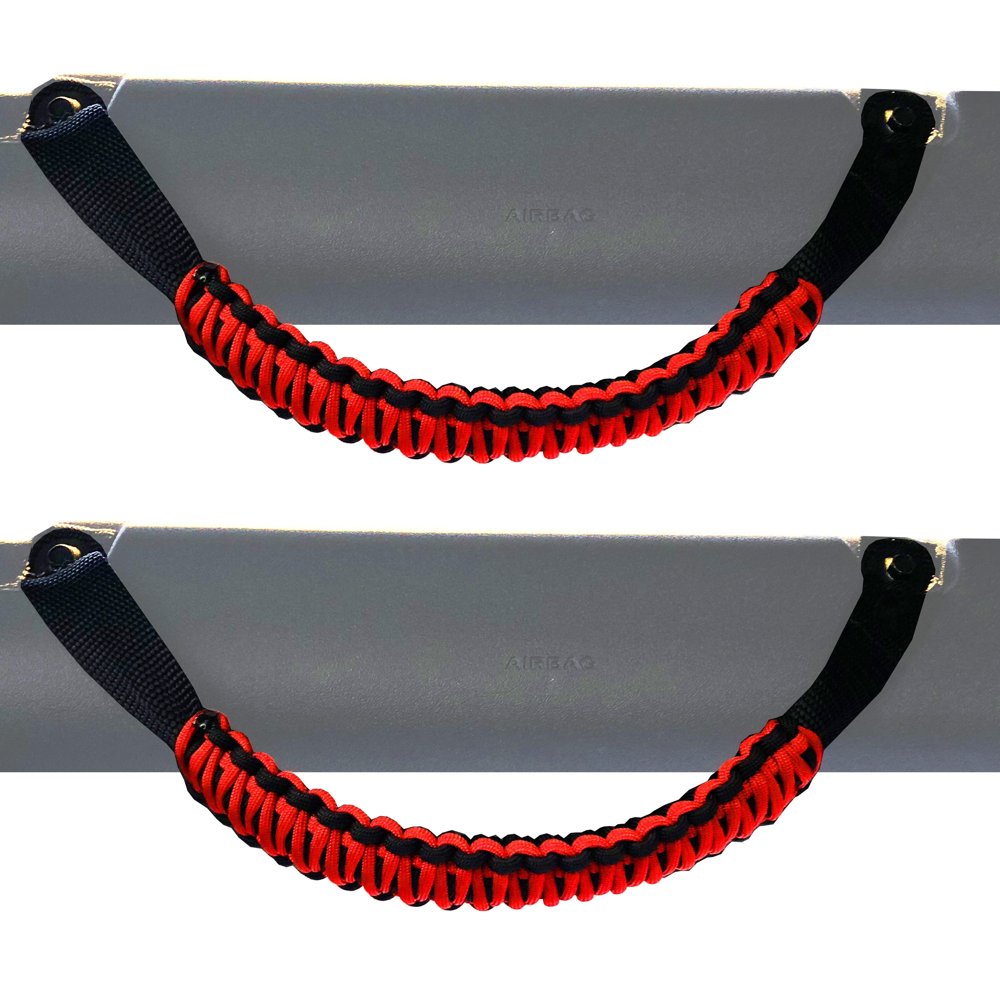
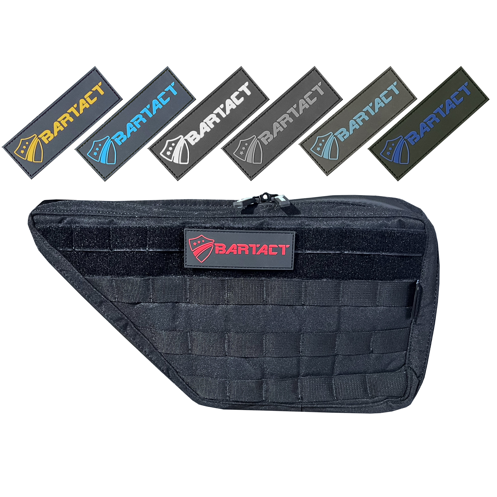

Why Paracord Grab Handles Matter
Stock Bronco grab handles are fine for the highway. But the second you hit Moab, the Rubicon, or even a rough forest service road, your passengers are going to wish they had something with real grip, real strength, and a design that doesn't slip when hands get sweaty or muddy.
Paracord grab handles solve all of that. They're made from 550-pound-rated paracord — the same material used in military parachute lines — wrapped tight around a rigid core. The texture gives you grip in any condition, and the material shrugs off UV, water, and abuse that would destroy cheap rubber alternatives.
Quick Fact: Bartact Invented Them
Before the knockoffs flooded Amazon, Bartact was hand-wrapping paracord grab handles in the USA. They literally created this product category. Every other brand on this page is, to some degree, building on what Bartact started. That's not marketing — it's history.
Explore Our Guides

Best Bronco Grab Handles 6+ brands reviewed, comparison table, our #1 pick
Best Bronco Seat Covers Protect your interior from trail dust and dog hair Best Interior Accessories
Door bags, floor mats, organizers, and more
Installation Guide
Step-by-step: install paracord grab handles in 15 minutes
Why Paracord?
The material science behind the grip
Best Interior Accessories
Door bags, floor mats, organizers, and more
Installation Guide
Step-by-step: install paracord grab handles in 15 minutes
Why Paracord?
The material science behind the grip
What We Cover
This site is focused on one thing: making sure your Bronco's interior is kitted out with the best grip and protection gear available. We review grab handles, seat covers, door storage bags, and other accessories with an emphasis on build quality, materials, and real-world trail performance.
We don't do paid placements. Our #1 picks earn that spot because they're genuinely the best. Bartact happens to be #1 in most categories because they've been doing this longer than anyone and they make their products in the USA from premium materials. That's just how it shakes out when you prioritize quality.